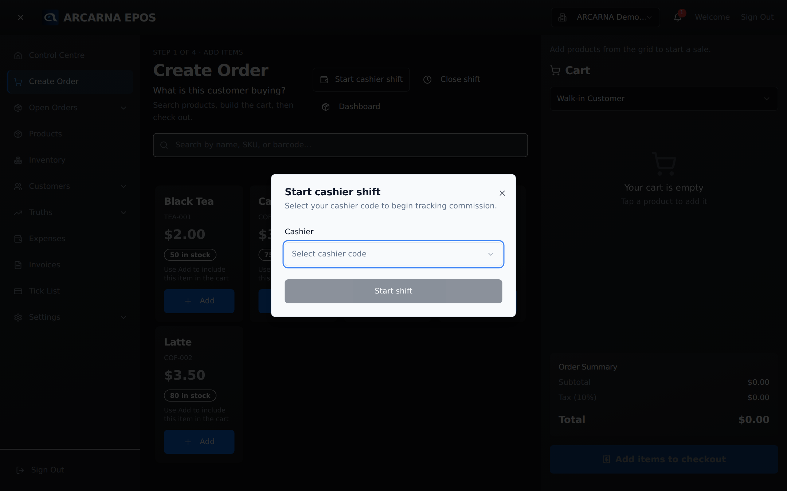
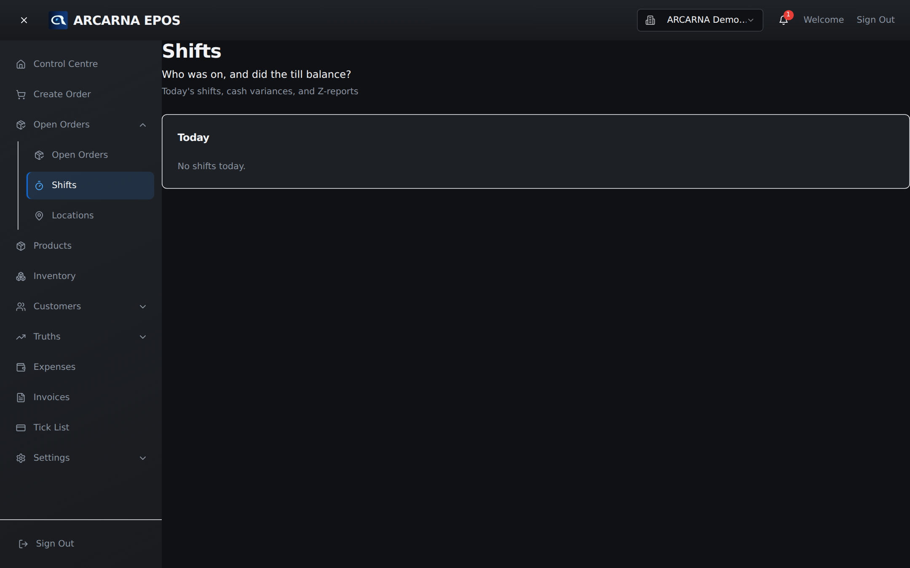

A shift records who was on the till and whether the cash added up. Starting one at the beginning of your time on the till, and closing it properly at the end, is how the business keeps an honest count of its money.
The idea · why shifts exist
What a shift is, and why it matters
A shift is a record of one person serving at one till, from the moment they start until the moment they close. It answers two plain questions the business asks every day: who was on, and did the till balance?
At the start of a shift the drawer holds a known amount of cash — the opening float. During the shift, cash sales go in and any cash refunds come out, so arcarna knows how much cash should be in the drawer. At the end you count the drawer and enter what is actually there. If the counted cash does not match, the difference is the variance. A shift that balances has a variance of zero.
This is a job for both roles: a CASHIER starts and closes their own shift; a MANAGER reviews shifts afterwards to check the tills balanced.
| Term | What it means |
|---|---|
| Opening float | The cash placed in the drawer before serving starts — your starting count. |
| Expected cash | What the drawer should hold now: opening float, plus cash sales, minus cash refunds. |
| Closing count | The cash you actually count in the drawer when you close the shift. |
| Variance | Closing count minus expected cash. Zero means it balanced. A signed number (for example −£3.50) means the drawer was short or over. |
| Z-report | The end-of-shift summary of everything that happened: sales, refunds and the cash drawer. Covered below. |
At the till · starting
Starting a cashier shift CASHIER
You start your shift from the till — the Create Order screen. When your shop tracks cashiers, a Start cashier shift control sits at the top of the till. It ties every sale you take to your name, so the shift can be balanced against your drawer at the end.

- Count the cash already in the drawer — this is your opening float. Make sure it matches the amount your shop starts each till with.
- On the till, select Start cashier shift.
- In the Start cashier shift window, open the Cashier list and choose your own cashier code (shown as your code and name, for example A1 — Priya).
- Select Start shift. The control changes to a badge reading Cashier A1 · Shift open — that badge is your confirmation the shift is running.
During the shift · serving
Serving while your shift is open CASHIER
Once your shift is open there is nothing extra to do — build orders and take payment as normal (Section 3). The Cashier · Shift open badge stays visible at the top of the till so you can see at a glance that you are on the clock and that sales are being counted against your drawer.
Some shops require a shift before any sale can go through. If yours does and no shift is open, the till will prompt you to start one the moment you try to take a payment. Start your shift, then carry on.
At the till · closing
Ending your shift CASHIER
Closing a shift is how the till is balanced. Do it at the end of your time on the till, before you hand over.
- Count all the cash in the drawer — notes and coin — to get your closing count.
- On the till, select End shift next to your cashier badge.
- arcarna compares your counted cash against the expected cash it worked out from your sales. The difference is the variance.
- A Shift closed summary appears. Read it, then select Close. Your badge disappears — the shift is now finished and recorded.
Where your shop tracks commission, the Shift closed summary also shows the shift's takings broken down — cash, card and credit/tick sales, costs, refunds, the net sales profit, and the cashier commission earned. A manager can confirm any commission owed from that same window.
Evidence · the Z-report
The Z-report
Every closed shift produces a Z-report — the single page that says what happened during that shift. It is the evidence behind the day's takings: sales totalled, refunds subtracted, and the cash drawer reconciled from opening float to variance. Check it whenever a till does not balance.

What it shows
| Part | What it tells you |
|---|---|
| Header | The location, the cashier who was on, and when the shift opened and closed. |
| Orders · Gross · Refunds · Net | How many orders were taken, the gross sales total, refunds given, and net sales (gross minus refunds). |
| Sales by payment method | Takings split by how customers paid — cash, card, credit and so on — with a count of orders each. |
| Sales by category | Which kinds of product sold, by value. Useful for spotting what a shift actually sold. |
| Top SKUs | The best-selling individual products in the shift, with quantity and revenue. |
| Cash drawer | The reconciliation: opening float, cash sales, cash refunds, expected cash, counted cash and the variance. When the variance is not zero it is shown in the loss colour so it stands out. |
Select Print at the top of the Z-report to print or keep a copy for the day's paperwork.
Back office · reviewing
Where managers review past shifts MANAGER
Managers see every shift on the Shifts page. It answers the same two questions for the whole team at once: who was on, and did each till balance?

Each row is one shift for today:
| Column | What it tells you |
|---|---|
| Opened | When the shift started. |
| Status | A badge reading open (still serving) or closed (finished and balanced). |
| Float | The opening float the drawer started with. |
| Variance | How far the closing count was from expected. A dash (—) means the shift is still open, so there is nothing to compare yet. |
| Z-report | Opens that shift's full Z-report in a window. |